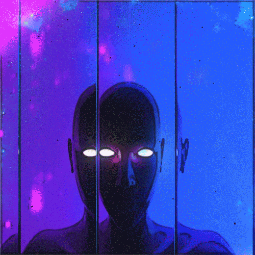
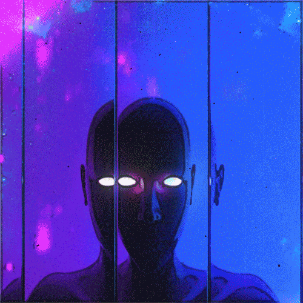
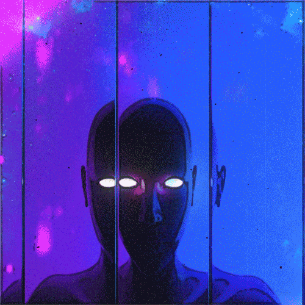
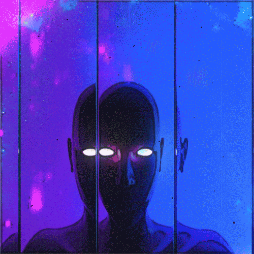

You reach near the end.
A face appears.
"I am Keeper of the Liminal Worlds.
Are you sure you want to go home, human?" The face asks.
You answer bittersweetly.
"It seems you have been through a lot. Your heart feels full,
and you've done well in Liminal Chaos.
With a mind of fortitude, and a spirit of rich emotion, I sense within you a meaningful life lived."
There is some silence.
The face summons the portal to the archway.
"I wish you peace when time comes to take your life, human."
You fall.